Perspectives on Linguistic Data Science
John P. McCrae - University of Galway
Course at ESSLLI 2023
Social Media Analytics
Social Media - Enterprise
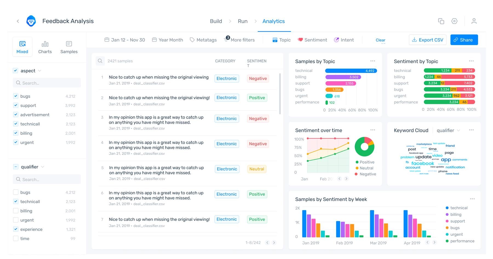Image source: https://monkeylearn.com/blog/sentiment-analysis-of-twitter/Social Media - Politics
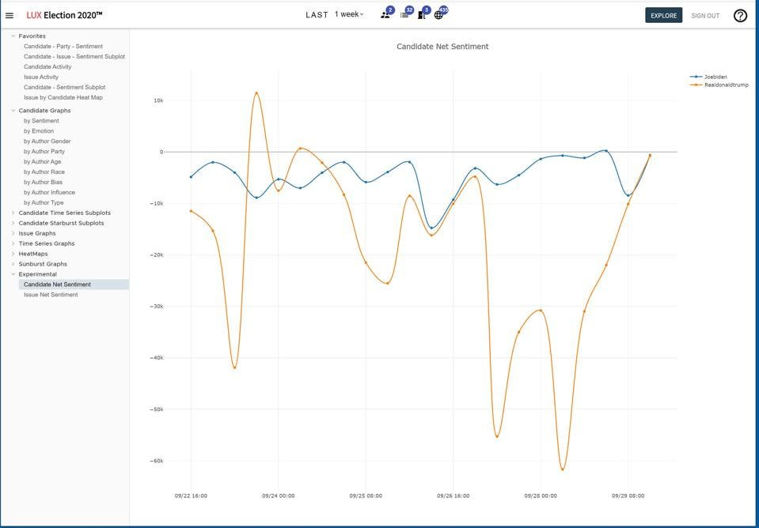Image source: https://www.forbes.com/sites/waynerash/2020/09/29/new-big-data-sentiment-analysis-show-potential-biden-election-landslide/Ethical Data Collection
- Copyright
- Data Protection/Privacy
- Bias (gender, race, sexuality, ...)
- Represntativeness
Data Collection
- API
- Web Scraping
- Crowdsourcing
- Data Purchase
Noisy User-Generated Content
- Spelling
- Grammar
- Slang
- Emojis
- Code-mixing
Sentiment, Emotion, Sarcasm
Sentiment Analysis
- Predicting sentiment of text
- Binary (positive/negative) or graded (0-5)
Challenges of Sentiment Analysis
- Indirectness: "Although the product is disliked by many, it is still popular"
- Ambiguity: "The concert was crazy" vs. "The traffic was crazy"
- Irony: "I love it when my flight is delayed"
- Negation: "I don't like it"
Lexicon Approaches
Generate a lexicon of positive and negative words
Use counts to evaluate sentiment
| Positive | Negative |
|---|---|
| good | bad |
| great | terrible |
| excellent | awful |
| ... | ... |
SentiWordNet
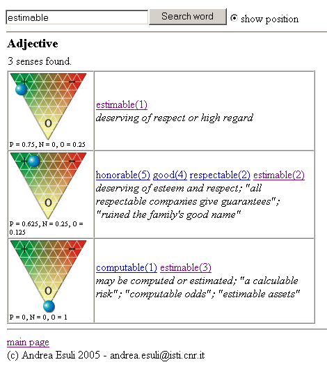Machine Learning Approaches - Features
- Sentiment features (sentiment lexicon)
- Linguistic features (n-grams, ...)
- Social Media features (hashtags, emoticons, …)
- Other features (negation)
- Feature selection and weighting (occurrence (binary), freq, PMI, TF-IDF)
Machine Learning Approaches - Deep Learning
- Deep neural networks (LSTM, transformer, ...)
- Pre-trained Language Models
- Prompt-based Learning
Aspect-Based Sentiment Analysis
"The camera’s focus was bad, but has a great size and is easy-to-use."
Aspects:
- Focus (negative)
- Size (positive)
- Ease-of-use (positive)
Emotion Analysis
- Emotion
- angry, sad, joyful, fearful, ashamed, proud, elated
- Mood
- cheerful, gloomy, irritable, listless, depressed, buoyant
- Interpersonal stances
- friendly, flirtatious, distant, cold, warm, supportive, contemptuous
- Attitudes
- liking, loving, hating, valuing, desiring
- Personality traits
- nervous, anxious, reckless, morose, hostile, jealous
Emotion models - Ekman
 Source: https://sites.tufts.edu/emotiononthebrain/2014/12/08/am-i-in-trouble-interpreting-facial-expressions/
Source: https://sites.tufts.edu/emotiononthebrain/2014/12/08/am-i-in-trouble-interpreting-facial-expressions/Emotion models - Plutchik
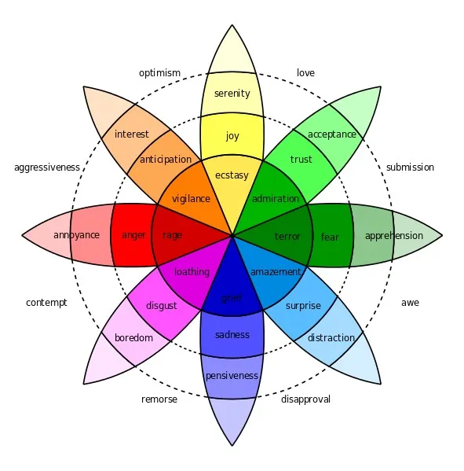
Source: Machine Elf 1735 (public domain)Emotion models - Lövheim (VAD)
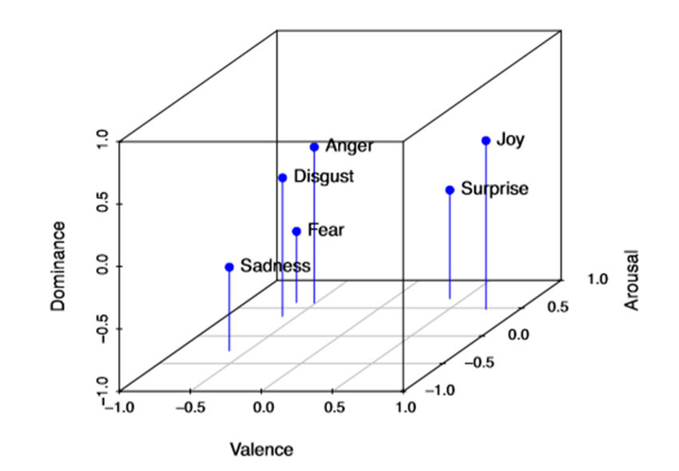Source: Mitrut et al. (2019) Emotion Classification Based on Biophysical Signals and Machine Learning TechniquesHands-on: Sarcasm Detection
Distant Reading
Close vs Distance Reading
- Close reading is the traditional way of reading a text
- Distant reading uses computational methods to analyse canons of text
- Term attributed to Franco Moretti (2000)
"So far as the engines of history are concerned, meaning does not matter. In principle, one could study the history of a literary tradition without reading any of literature. ... the main virtue of the computerized content analysis methods I use is that they save one from actually having to read the literature" - Martindale
"The Great Unread"
- Thousands of books published in 19th century England
- Only a few studied now by famous authors
- Computational techniques can reveal trends
- Titles became shorter
- Text became less abstract
Analysis methods for Distant Reading - Diachronic Frequency Analysis
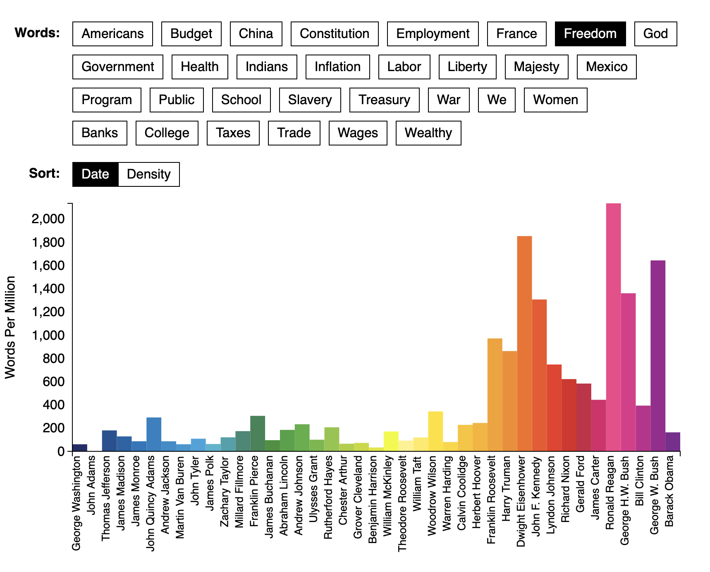Source: Figure 1.4.1 – The Atlantic’s “The Language of the State of the Union” © Benjamin Schmidt, Mitch Fraa, Chris Barna, Libby Bawcombe, Noah Gordon, Betsy Ebersole, Jennie Rothenberg GritzAnalysis methods for Distant Reading - Lexical Diversity
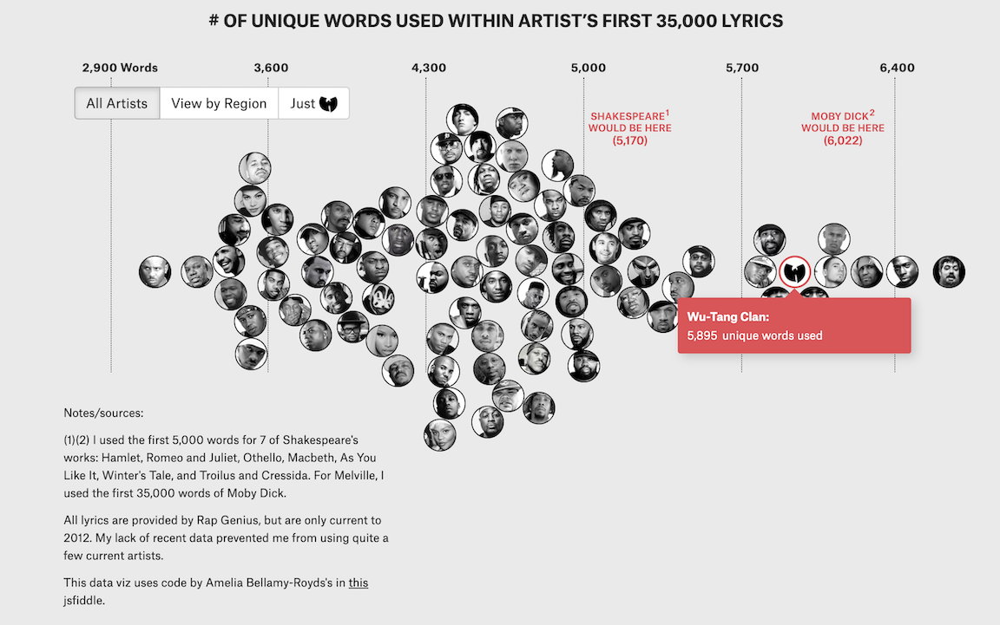Source: Matt DanielsAnalysis methods for Distant Reading - Topic Modelling
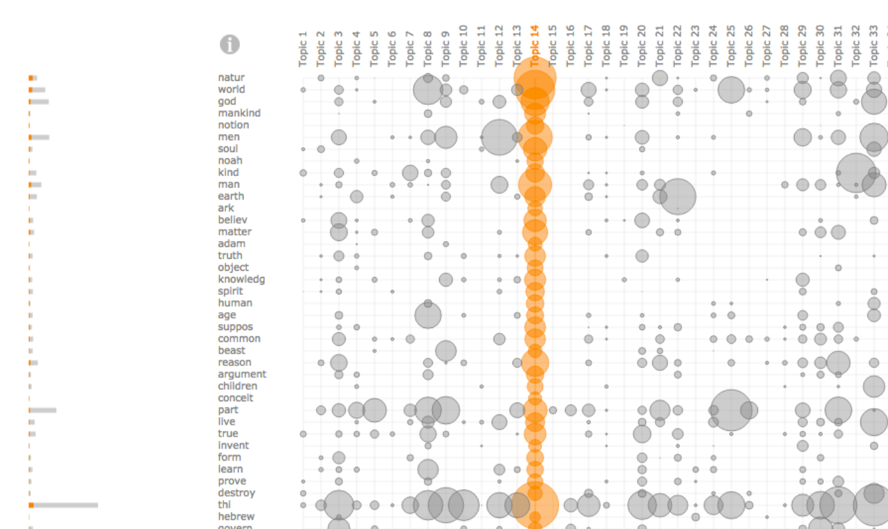Narrative Analysis
- Content (topics, characters, events, ...)
- Structure (plot, character relationsships, ...)
- Discourse (narrator, style, ...)
Approach: collect text, annotate, analyse
Linguistic Linked Data
Structured and Unstructured Data
- Unstructuted data is text, images, audio, video, ...
- Structured data is data in a database
- Lots of knowledge, especially in graph form
Wikidata
Massive knowledge base
Q437Linked Data
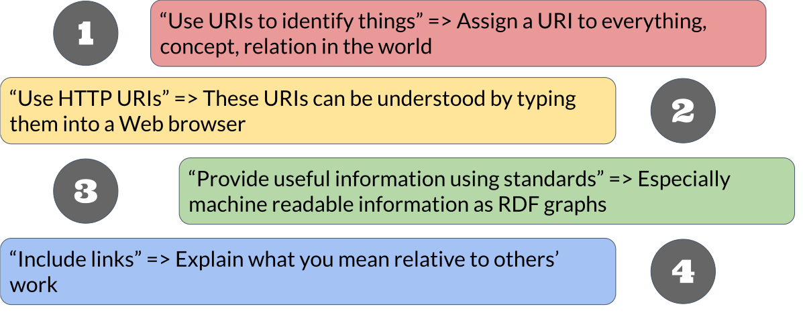Linked Open Data Cloud

Linguistic Linked Open Data Cloud
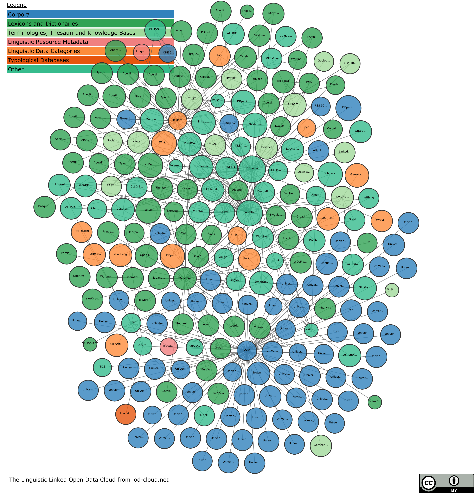
Promise of Linguistic Linked Data
- Representation and Modelling
- Structural Interoperability
- Federation
- Ecosystem
- Expressivity
- Conceptual Interoperability
- Dynamic Import
Interoperability
Different annotation schemes
| Susanne | Penn | |
| The | AT | DT |
| Fulton | NP1s | NNP |
| County | NNL1cb | NNP |
| Grand | JJ | NNP |
| Jury | NN1c | NNP |
| said | VVDv | VBD |
| Friday | NPD1 | NNP |
NLP Interchange Format

OntoLex-Lemon - Lexicon Model for Ontologies
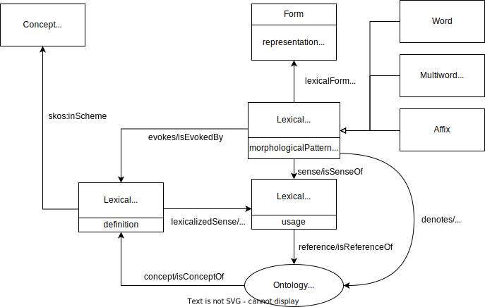Summary
Summary
- Social media is an important data source (but be careful!)
- Sentiment and emotion analysis is achieving good performance
- Computers can now tackle the "great unread"
- Linking data can increase interoperability and usabilty
Thank you for attending the course!
Feel free to contact me at john@mccr.ae if you have any questions
Back